Topological Autoencoders++:
Cycle-aware dimensionality reduction
Mattéo Clémot1, Julie Digne2,1, Julien Tierny2,3
1Université Lyon 1 2CNRS 3Sorbonne Université
Dimensionality reduction
 $\longrightarrow$
$\longrightarrow$
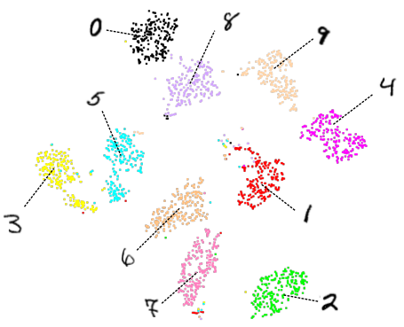
Dimensionality reduction: preserving cycles
 $\longrightarrow$
$\longrightarrow$
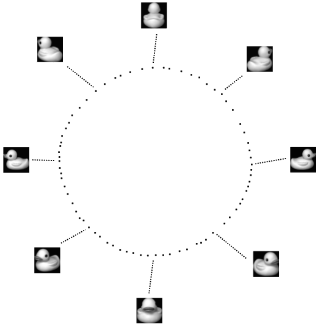
Topological features in high-dimensional data
Motion capture ($d=62$)
angles between the bones of a skeleton
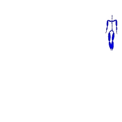
[CMU motion capture dataset]Single-cell omics ($d>1000$)
expression of genes/proteins of cells at different cycle stages
 [Wikimedia Commons]
[Wikimedia Commons]
Filtrations and persistent homology (PH)
Rips filtration $\ripsf{r}(\pc) = \left\{\sigma\subset\pc\mid\delta(\sigma)\leq2r\right\}$
Persistence diagram
radius $r$ = 0.000
Autoencoders with topological constraints
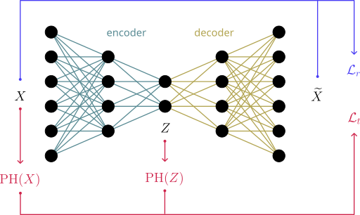
\[
\losst=\sum_{\hdim\in\{0,1\}}\calw_2\bigl(\dgmrips{\hdim}(\pc),\dgmrips{\hdim}(\lpc)\bigr).
\]
$\rightarrow$ loses information about which vertices are involved in which cycle
\[ \begin{split} \losst=\ltopoae{\hdim}= &\|A^\pc[\critical{\hdim}(\pc)]-A^\lpc[\critical{\hdim}(\pc)]\|_2^2 +\\ &\|A^\lpc[\critical{\hdim}(\lpc)]-A^\pc[\critical{\hdim}(\lpc)]\|_2^2 \end{split} \]
$\rightarrow$ Topological Autoencoders [Moor et al., 2020]
\[ \begin{split} \losst=\ltopoae{0}= &\|A^\pc[\critical{0}(\pc)]-A^\lpc[\critical{0}(\pc)]\|_2^2+\\ &\|A^\lpc[\critical{0}(\lpc)]-A^\pc[\critical{0}(\lpc)]\|_2^2 \end{split} \] $\rightarrow$ aims at preserving connected components

Properties
TAE upper-bounds the Wasserstein distanceFor any point clouds $\pc$, $\lpc$ of equal size: \[\calw_2\bigl(\dgmrips{0}(\pc),\dgmrips{0}(\lpc)\bigr)^2\leq\ltopoae{0}(\pc,\lpc).\]
(and under a general position assumption, $\ltopoae{0}(\pc,\lpc)=0$ implies identical $\PH{0}$ pairs)
However
TAE vs Wasserstein distanceFor point clouds $\pc$, $\lpc$ of equal size: \[\calw_2\bigl(\dgmrips{0}(\pc),\dgmrips{0}(\lpc)\bigr)^2\leq\ltopoae{0}(\pc,\lpc).\]
but
\[ \ltopoae{1}(\pc,\lpc)=0 \nRightarrow\left\{ \begin{array}{l} \dgmrips{0}(\pc)=\dgmrips{0}(\lpc)\\ \dgmrips{1}(\pc)=\dgmrips{1}(\lpc) \end{array} \right. \]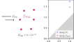
Counter-example
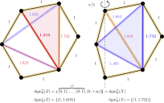
Cascade distortion
Idea: constrain more edge lengths to favor an isometric embedding of the 2-chains filling the 1-cycles.
$\longrightarrow$ take edges appearing in the persistent cascade
\[\critical{\hdim}(\pc)\subset\skelcasc^\hdim(\pc)\]
Cascade distortion
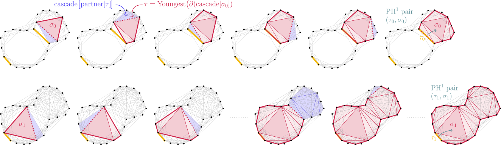
Topological autoencoders, with CD
\[ \begin{split} \losst=\ltopoae{\hdim}= &\|A^\pc[\critical{\hdim}(\pc)]-A^\lpc[\critical{\hdim}(\pc)]\|_2^2 +\\ &\|A^\lpc[\critical{\hdim}(\lpc)]-A^\pc[\critical{\hdim}(\lpc)]\|_2^2 \end{split} \]
\[ \begin{split} \losst=\lcascae{\hdim}= &\|A^\pc[\skelcasc^\hdim(\pc)]-A^\lpc[\skelcasc^\hdim(\pc)]\|_2^2+\\ &\|A^\lpc[\critical{\hdim}(\lpc)]-A^\pc[\critical{\hdim}(\lpc)]\|_2^2 \end{split} \]
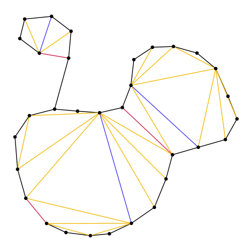
Results
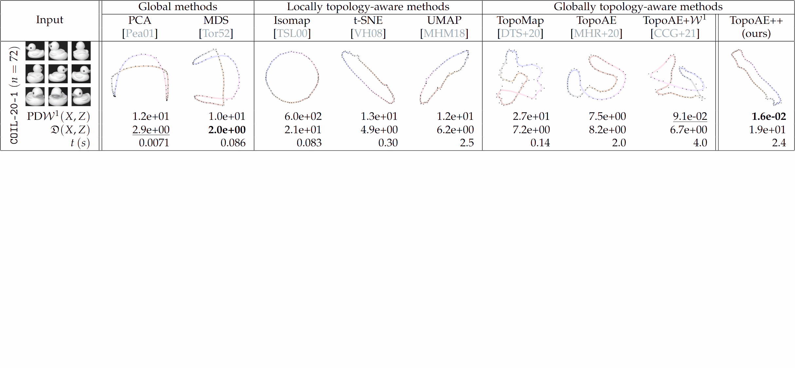
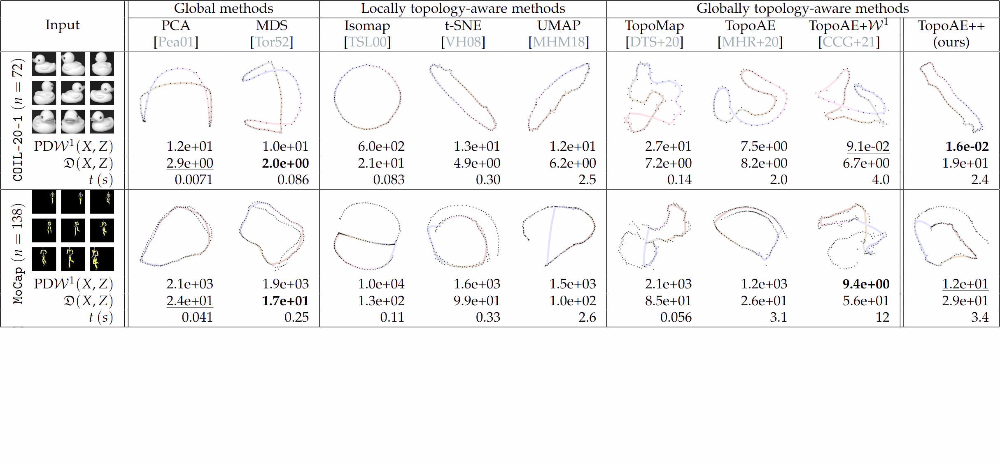
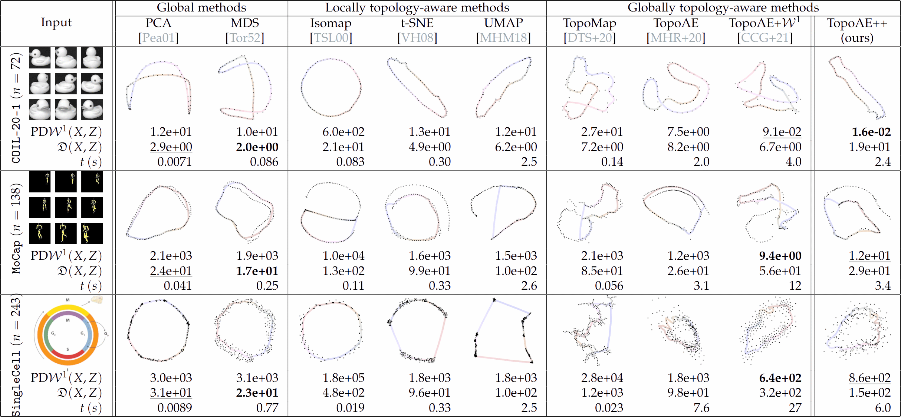
Results (synthetic)
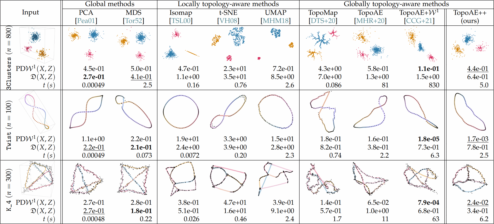
Results (non-planar)
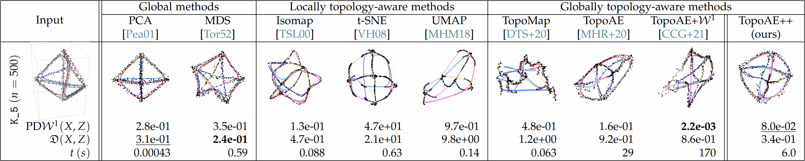
Results (quantitative)
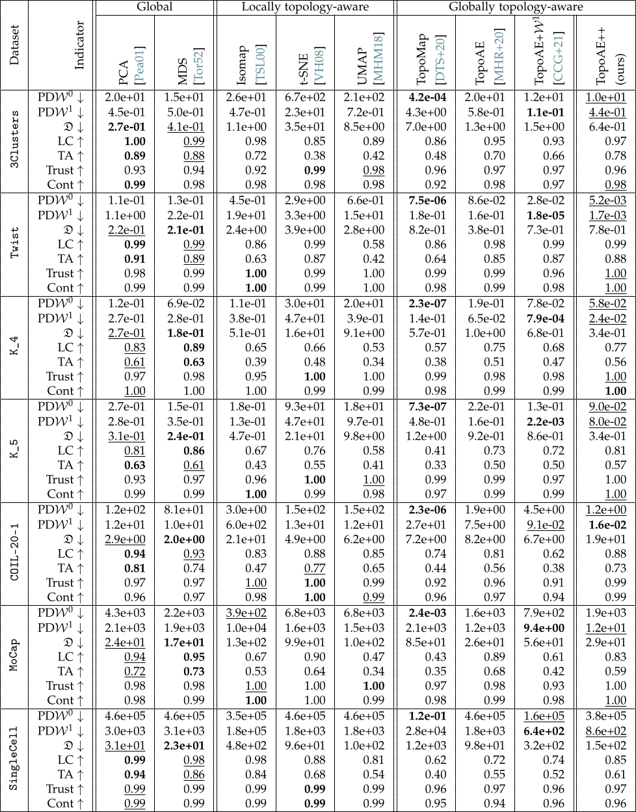
Topological autoencoders, with CD
- each iteration computes $\PH{}(Z)$, with $Z\subset\bbr^2$
- we introduce a dedicated algorithm
\[ \begin{split} \losst=\lcascae{\hdim}= &\|A^\pc[\skelcasc^\hdim(\pc)]-A^\lpc[\skelcasc^\hdim(\pc)]\|_2^2+\\ &\|A^\lpc[\critical{\hdim}(\lpc)]-A^\pc[\critical{\hdim}(\lpc)]\|_2^2 \end{split} \]
Faster planar Rips persistence
Algorithm for planar Rips PH using a geometric characterization of cycle-killing edges.
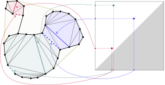


- acceleration of the overall dimensionality reduction approach
- check out the paper for more details!
Faster planar Rips persistence: tools
Relative neighborhood graph ($\rng$)
[Toussaint, 1980]- edges with an empty lens
- $\mst(\pc)\subseteq\rng(\pc)\subseteq\del(\pc)$

Minmax length triangulations ($\mml$)
[Edelsbrunner et al., 1993]- minimize the longest edge's length
- $\calo(n^2)$, solved in each $\rng$-polygon

Geometric graphs and Rips PH
- $\mst$ edges are the ones killing $\PH{0}$ classes
- $\rng\setminus\mst$ edges are the ones creating positive $\PH{1}$ classes [Koyama et al., 2024]
Characterization of cycle-killing edgesIn the plane, edges killing positive $\PH{1}$ classes are the longest edges of the $\mml$ triangulations of each $\rng$-polygon.
Takeaways
- 2D embeddings that preserve PH, both qualitatively and quantitatively
- New algorithm for fast Rips persistence diagrams of planar point sets
Limitations and further work
- Initial PH computation (in high dimension) limits the input size
- Theoretical guarantees?
Integration into the Topology ToolKit (TTK)
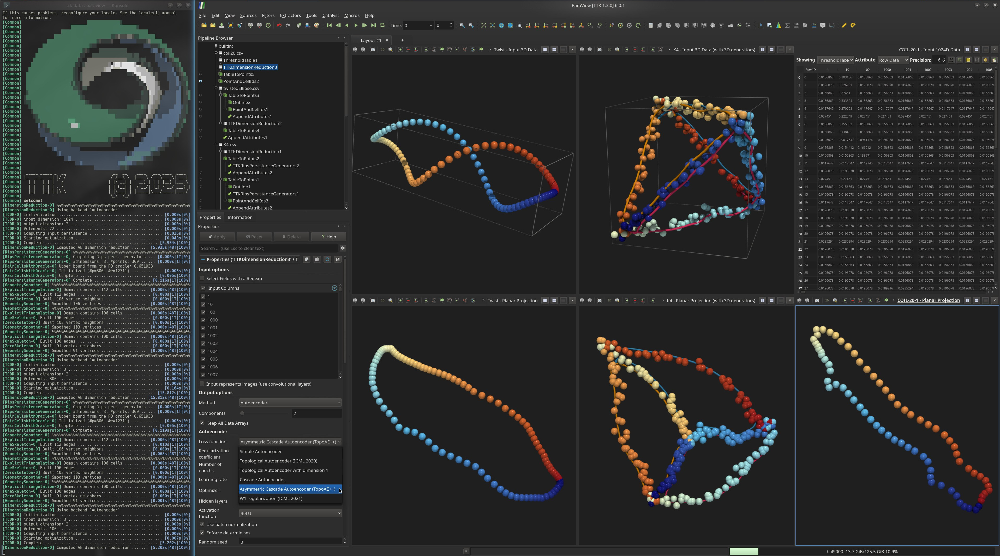
example available online: https://topology-tool-kit.github.io/examples/topoAEppTeaser- an open-source library for topological data analysis and visualization
- written in C++, Python interface
- ParaView plugin (open-source scientific visualization software)
Cycle-aware dimensionality reduction TTK example
Thank you! Questions?
Funding: ERC TORI (https://erc-tori.github.io/)
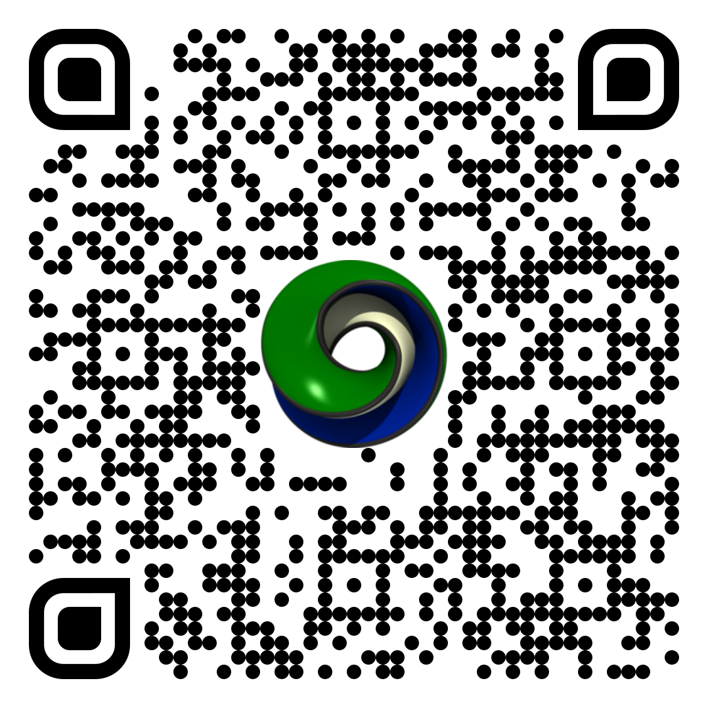